<!DOCTYPE html>
<html lang="en">

<head>
    <meta charset="UTF-8">
    <meta http-equiv="X-UA-Compatible" content="IE=edge">
    <meta name="viewport" content="width=device-width, initial-scale=1.0">
    <title>福建</title>
    <link rel="stylesheet" href="./child.css">
    <style>
        body {
            background-image: url(./bg_fujian.jpg);
            background-size: cover;
            background-attachment: fixed;
        }

        .wheather {
            float: left;
            position: fixed;
            z-index: 0;
        }
        .map {
            float: right;
            position: fixed;
            right: 0;
            z-index: 0;
        }
    </style>
</head>

<body>
    <div class="map">
        <!DOCTYPE html PUBLIC "-//W3C//DTD XHTML 1.0 Transitional//EN" "http://www.w3.org/TR/xhtml1/DTD/xhtml1-transitional.dtd">

        <!--引用百度地图API-->
        <style type="text/css">
            html,
            body {
                margin: 0;
                padding: 0;
            }

            .iw_poi_title {
                color: #CC5522;
                font-size: 14px;
                font-weight: bold;
                overflow: hidden;
                padding-right: 13px;
                white-space: nowrap
            }

            .iw_poi_content {
                font: 12px arial, sans-serif;
                overflow: visible;
                padding-top: 4px;
                white-space: -moz-pre-wrap;
                word-wrap: break-word
            }
        </style>
        <script type="text/javascript" src="http://api.map.baidu.com/api?key=&v=1.1&services=true"></script>


        <!--百度地图容器-->
        <div style="width:320px;height:320px;border:#ccc solid 1px;" id="dituContent"></div>

        <script type="text/javascript">
            //创建和初始化地图函数：
            function initMap() {
                createMap();//创建地图
                setMapEvent();//设置地图事件
                addMapControl();//向地图添加控件
            }

            //创建地图函数：
            function createMap() {
                var map = new BMap.Map("dituContent");//在百度地图容器中创建一个地图
                var point = new BMap.Point(119.302446, 26.10634);//定义一个中心点坐标
                map.centerAndZoom(point, 8);//设定地图的中心点和坐标并将地图显示在地图容器中
                window.map = map;//将map变量存储在全局
            }

            //地图事件设置函数：
            function setMapEvent() {
                map.enableDragging();//启用地图拖拽事件，默认启用(可不写)
                map.enableScrollWheelZoom();//启用地图滚轮放大缩小
                map.enableDoubleClickZoom();//启用鼠标双击放大，默认启用(可不写)
                map.enableKeyboard();//启用键盘上下左右键移动地图
            }

            //地图控件添加函数：
            function addMapControl() {
                //向地图中添加缩放控件
                var ctrl_nav = new BMap.NavigationControl({ anchor: BMAP_ANCHOR_TOP_LEFT, type: BMAP_NAVIGATION_CONTROL_SMALL });
                map.addControl(ctrl_nav);
            }


            initMap();//创建和初始化地图
        </script>

        </html>
    </div>
    <div class="wheather">
        <div id="he-plugin-standard"></div>
        <script>
            WIDGET = {
                "CONFIG": {
                    "layout": "1",
                    "width": "320",
                    "height": "320",
                    "background": "1",
                    "dataColor": "FFFFFF",
                    "city": "CN101230101",
                    "key": "296ba89aaec6437383612b4f12674bdc"
                }
            }
        </script>
        <script src="https://widget.qweather.net/standard/static/js/he-standard-common.js?v=2.0"></script>
    </div>
    <div class="pro1 privence" id="福建">
        <header>
            <h1>山海画卷，海峡神韵——福建</h1>
        </header>
        <main>
            <div class="top">
                <li>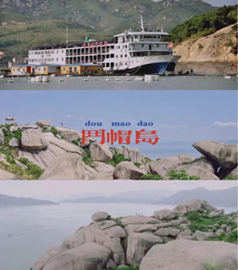</li>
                <li>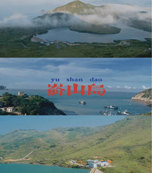</li>
                <li>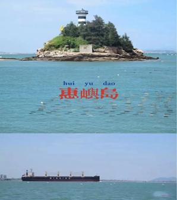</li>
                <li>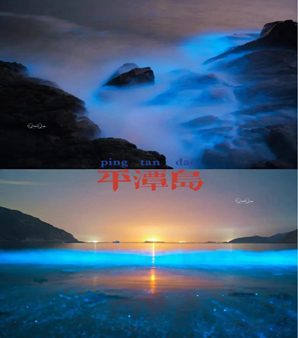</li>
                <li>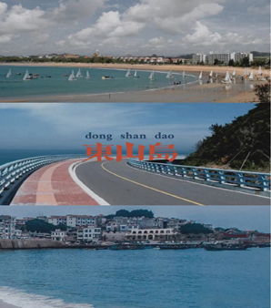</li>
                <li>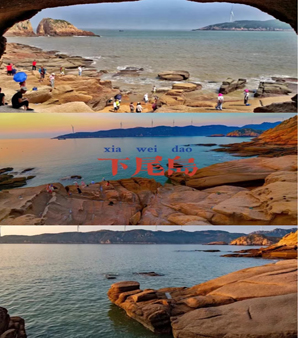</li>
            </div>
            <div class="bot">
                <div class="right">
                    <h2>畅游土楼仙境，尽享客家风情。</h2>
                    <li>
                        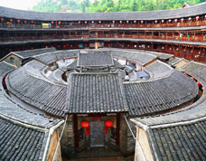
                        <span>日本东京艺术大学教授茂木一郎说：“土楼像地下冒出的巨大蘑菇，又像自天而降的黑色飞碟”。这“黑色飞碟”有青山怀抱，绿水环绕，田园烘托，既壮观，又抒情，其诗情画意和豪迈气概，让人留下无穷的想象空间。
                        </span>
                    </li>
                    <li>
                        
                        <span>永定土楼，是闽南独有的建筑。第一次看到这种建筑，很是新奇，也很是震撼。据说已经有几百年的历史了，现在还有当地的村民住在里面，他们在土楼里洗衣做饭，很是朴实，呈现了一处不被世俗所沾染的世外桃源般的生活。
                        </span>
                    </li>
                    <li>
                        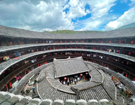
                        <span>所谓“客家人”，他们的祖先为躲避战乱饥荒，从中原地区南迁到当今福建一带定居。因为客居他乡，所以称呼自己为“客家人”。
                        </span>
                    </li>
                    <li>
                        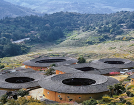
                        <span>客家土楼的建筑特色太过鲜明。土楼内一般是一楼厨房、二楼粮仓、三四楼住人。客家人所讲的汉语被认为是最纯正的汉语，而今天北方地区所讲的接近普通话的汉语其实是汉人和北方游牧民族融合后的产物。
                        </span>
                    </li>
                    <h2>梦里福地，画里福州。</h2>
                    <li>
                        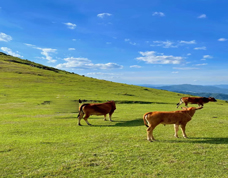
                        <span>大姆山草场位于福清市南岭镇大山村，海拔600多米。周末可以携友人小聚，驱车登顶，晴天碧野，翠草清波，让人心旷神怡。大姆山绵延八百亩的天然高山草场，为福州辖区较大、风景十分优美的草原。
                        </span>
                    </li>
                    <li>
                        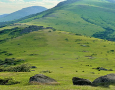
                        <span>站在草场的高处，空气好的话能看到两边的景色，一边是福清，一边是长乐。草场上有一些牛羊，在美滋滋的吃着草，希望我们的到来没有惊吓到它们。</span>
                    </li>
                    <li>
                        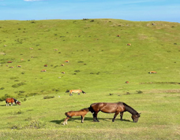
                        <span>印象中感觉草原都是一望无际，地形平坦的那种，不过大姆山草场说出来可能会让你震惊，这是个主峰海拔六百多米的山上的原生态草场，说实话，看到它的那一瞬间，真的是震惊了。
                        </span>
                    </li>
                    <li>
                        
                        <span>大姆山绵延八百亩的天然高山草场，为福州辖区较大、风景十分优美的草原。山顶满是大片的草原连绵几个山头，由于临近海滨，山上风大气温略低，站在山顶能看到长乐一带的海岸线。草原辽阔，景色迷人。
                        </span>
                    </li>
                </div>
            </div>
        </main>
    </div>
    <script src="../pic.js"></script>
</body>

</html>